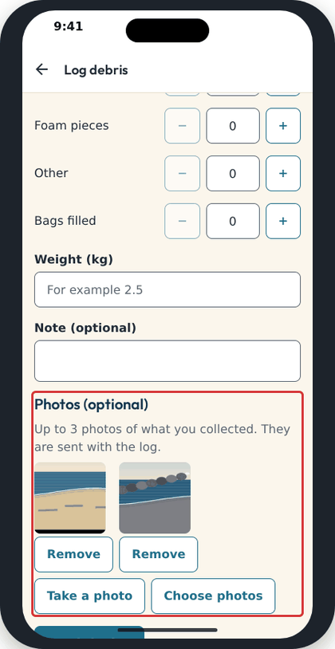
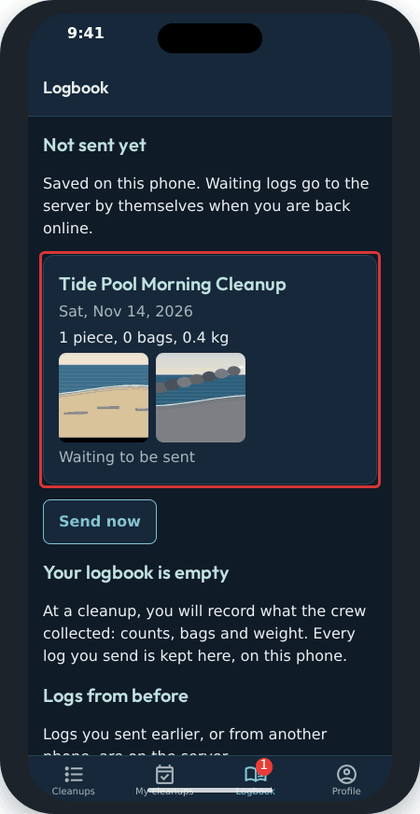
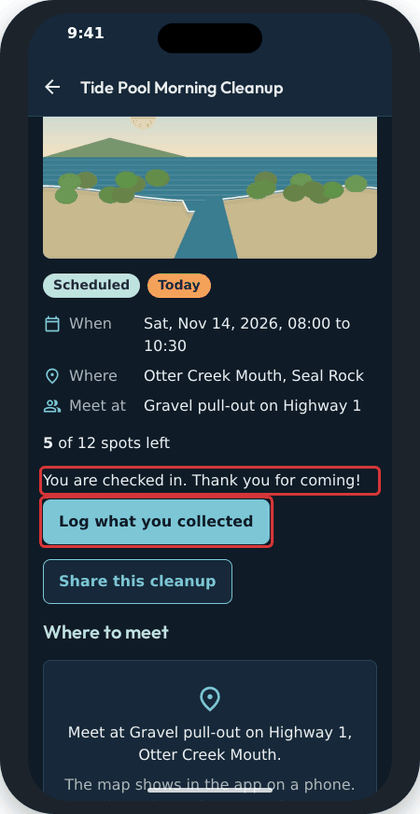

React Native & Expo · Part 2 · Session 15 of 26 · 3 hours
Session 15
Camera, Photos, Location and Maps
Pictures of the work, and the honest way to say who came.
Today
Three hours, two lessons
| 0:00 | Warm-up: the gate and the dry bag |
| 0:10 | 6.2 Camera and Photos: model, demo, lab, project |
| 1:25 | Break (10 min) |
| 1:35 | 6.3 Location and Maps: model, demo, lab, project |
| 2:50 | Exit ticket, homework, what to bring next time |
LABS Lab files are in
labs/module-15. Work in starter/, never the solution.Warm-up · 10 minutes
The gate and the dry bag
- Theo's iPhone said Don't Allow to the camera: which face, and what still works?
- A log with two photos: what reaches the server first?
- Your two photo file sizes: and the API takes 5 MB
WHY Tonight the camera goes through Session 14's gate, and the photos ride in its dry bag.
6.2
Camera and Photos
Small, safe, and sent before the log that names them.
6.2 · Mental model
Bags first, then the tally sheet
- The filled bags go on the sorting table first
- The tally sheet only names bags already there
- Photos are the bags: carried in the dry bag, numbered by the server
- The log is the sheet: it lists the numbers (photoIds)
6.2 · Two ways to a photo
One package, two buttons
| Take a photo | launchCameraAsync: the camera permission (6.1's gate) |
| Choose photos | launchImageLibraryAsync: no permission on current phones |
| Both answer | { canceled, assets }: uri, mimeType, fileSize |
| Web preview | A file chooser stands in for both |
PHONE Camera and library screens: from the documentation; check on your phone.
6.2 · Four questions
Every photo feature answers them
- How big? quality 0.6, no EXIF, JPEG not HEIC, 5 MB at most
- Where does it wait? Not the cache: the app's documents
- When does it go? With its log, from the queue
- What does a retry repeat? Nothing: each photo id is saved
6.2 · Live demo
One real photo through the API
node photo.mjs
POST /api/photos (28955 bytes): 201 Created the answer's fields: id, url, contentType, bytes, uploadedBy, createdAt contentType image/jpeg, bytes 28955, uploadedBy v04 GET its url: 200, image/jpeg, 28955 bytes POST /api/events/e17/logs with photoIds [its id]: 201, photoIds kept: true
WHY The photo itself is the body: Content-Type says what it is.
6.2 · Predict
The same bytes, labeled HEIC; then a 9 MB PNG
Content-Type: image/heic: status? message?a 9 MB PNG: status? message?- And what does the queue do with a log that carried each?
PREDICT Write both before the run.
6.2 · Live demo
Final for that photo
node refusals.mjs
# Content-Type: image/heic
HTTP/1.1 415 Unsupported Media Type
{ "error": "unsupported_media_type", "message": "Photos must be JPEG, PNG or WebP images." }
# a 9 MB PNG
HTTP/1.1 413 Payload Too Large
{ "error": "payload_too_large", "message": "Photos must be 5 MB or smaller." }
WATCH Check type and size when a photo is ADDED, while another can be chosen.
6.2 · The finished code
Small files for one bar of signal
shoreline-crew/src/components/LogPhotos.tsx
const pickerOptions: ImagePicker.ImagePickerOptions = { mediaTypes: ['images'], quality: 0.6, exif: false, preferredAssetRepresentationMode: ImagePicker.UIImagePickerPreferredAssetRepresentationMode.Compatible,
WHY HEIC and the compatible JPEG: from Apple's and Expo's docs; check on an iPhone.
6.2 · Where a photo lives
From the cache to the app's documents
shoreline-crew/src/utils/photoFiles.ts
export async function keepPhoto(uri: string): Promise<{ uri: string; bytes: number }> { folder.create({ idempotent: true }); // no error when the folder is already there const photo = new File(uri); await photo.move(new File(folder, `${randomUUID()}${photo.extension}`)); // photo.uri changes return { uri: photo.uri, bytes: photo.size };
WHY The web preview:
photoFiles.web.ts, same three functions.6.2 · Live demo
The classic React Native upload
// Don't: React Native's old FormData trick (a file address instead of a Blob)
const body = new FormData();
body.append('photo', { uri: photo.uri, name: 'photo.jpg', type: 'image/jpeg' });
await fetch(`${apiBaseUrl()}/api/photos`, { method: 'POST', body });
src/api/client.ts:452:8 - error TS2769: No overload matches this call.
Overload 1 of 3, '(name: string, value: string | Blob): void', gave the following error.
...
452 body.append('photo', { uri: photo.uri, name: 'photo.jpg', type: 'image/jpeg' });
WATCH append takes a string or a Blob. Do not cast it.
6.2 · With the cast
Expo's own fetch code, on that form
node formdata.mjs
old way: Error: Unsupported FormDataPart implementation a Blob part: converted, 171 bytes
WATCH Inside fetch: "Could not reach the server", forever. Send the Blob.
6.2 · The finished code
postPhoto: the photo is the body
shoreline-crew/src/api/client.ts
export async function postPhoto(photo: Blob, contentType: string): Promise<Photo> { const response = await request('/photos', { method: 'POST', headers: { 'Content-Type': contentType }, body: photo, }); const data: unknown = await response.json(); if (!isPhoto(data)) { throw new Error('Unexpected data from POST /api/photos'); } return data;
6.2 · Photos in the dry bag
Upload first, save each id at once
shoreline-crew/src/state/sendLogs.ts
for (const photo of photos) { let photoId = photo.photoId; if (photoId === null) { const file = await readPhoto(photo.uri); if (file === null) { continue; // the file is gone (the web preview after a reload): the log goes without it } photoId = (await postPhoto(file, photo.type)).id; useLogQueue.getState().setPhotoId(log.clientId, photo.uri, photoId); } photoIds.push(photoId);
WHY Photos have no clientId: a saved id is what stops a second upload.
6.2 · Live demo
A changed signature lists its call sites
npx tsc --noEmit
src/app/log/[id].tsx:133:5 - error TS2554: Expected 3 arguments, but got 2.
133 addLog(viewer, { event, log });
~~~~~~
src/state/logQueue.ts:33:47
33 add: (volunteerId: string, item: LogToSend, photos: LogPhoto[]) => void;
~~~~~~~~~~~~~~~~~~
An argument for 'photos' was not provided.
Found 1 error in src/app/log/[id].tsx:133
WHY Step 6 passes the photos; tsc prints nothing again.
6.2 · Saved data changes shape
Version 1 and migrate
shoreline-crew/src/state/logQueue.ts
version: 1, migrate: (saved, version) => { const logs = typeof saved === 'object' && saved !== null && 'logs' in saved ? saved.logs : []; return { logs: (Array.isArray(logs) ? logs : []) .map((item) => (version === 0 ? { ...item, photos: [] } : item)) .filter(isQueuedLog),
WHY Yesterday's logs survive the update with an empty photo list.
6.2 · Guided lab · 25 minutes
Found on the beach
labs/module-15/l6_2-camera-and-photos/starternpm testandnpm run typecheck: TS2769 again- Task 1: what the picker gave back (mimeType, room, one sentence)
- Task 2: the photo as the body; save each id; skip a gone file
MORE Task 3 at home:
version: 1 and migrate.6.2 · Project
Photos (optional) on the debris log

6.2 · Project
Saved on this phone, with its photos

PHONE Step 7 on a phone follows the documentation: the course could not run one.
10
Break
Back at 1:35: where we meet, and who came.
6.3
Location and Maps
A position is a circle; the code is the proof.
6.3 · Mental model
The sign-in sheet on the clipboard
- Walk up, say the word of the day, get a tick
- Nobody asks to see your phone's map
- Code = the word · API = the clipboard · attended = the tick
- The blue dot is for finding the clipboard, not for signing it
6.3 · A position is a circle
Where am I, really?
latitude, longitude | The center |
accuracy | The radius in meters (null when unknown) |
timestamp, mocked | When, and maybe faked |
| Under a cliff | 50 to 500 m circles are normal |
PHONE expo-location's documented targets, not guarantees.
6.3 · What proves you were there
The code versus the location
| Who checks it | The server · the phone (whoever holds it) |
| Under a cliff | Works · may refuse the right spot |
| No to location | Works · cannot check in |
| It proves | Heard the organizer · the phone said near |
WHY Screen checks are kindness; API checks are rules.
6.3 · Live demo
A wrong code: a message for the field
HTTP/1.1 400 Bad Request
cache-control: no-store
content-type: application/json; charset=utf-8
{
"error": "validation_failed",
"message": "Some fields need attention.",
"fieldErrors": {
"code": [
"That code does not match. Ask the organizer for today's code."
]
}
}
6.3 · Live demo
Every other answer
node checkins.mjs
Theo at e08 (not today): 409 Check-in opens on the day of the cleanup. Amara at e17 (no spot): 409 You need a confirmed spot to check in. Theo at e17 with 6544: 200, status attended Again: 200, status attended, same checkedInAt: true GET /api/events/e17 as Maya (organizer): checkInCode 6544 GET /api/events/e17 as Theo: checkInCode (not sent)
WHY Twice is fine: idempotent. And no request carries a position.
6.3 · One bar of signal
Not queued: paused, in memory
- A late check-in can never work: only on the day
- A wrong code needs the volunteer now
- The organizer needs to see it now
- "Keep Shoreline Crew open until then."
6.3 · The finished code
The screen follows the cache
shoreline-crew/src/api/mutations.ts
export function checkInMutation(eventId: string) { return mutationOptions({ mutationFn: (code: string) => checkIn(eventId, code), // Your sign-up is now 'attended': My cleanups, the cleanup's screen and this form read it onSettled: () => queryClient.invalidateQueries({ queryKey: ['signups'] }),
WHY Without onSettled the API says attended and the screen never changes.
6.3 · Live demo
A route TypeScript has never heard of
npx tsc --noEmit
src/app/check-in/[id].tsx:34:11 - error TS2339: Property 'id' does not exist on type 'String'. src/app/check-in/[id].tsx:34:39 - error TS2344: Type '"/check-in/[id]"' does not satisfy the constraint 'RoutePath'. src/components/SignupPanel.tsx:101:23 - error TS2322: Type '"/check-in/[id]"' is not assignable to type '"/" | RelativePathString | ExternalPathString | "/before-you-go" | "/sign-in" | "/_sitemap" | "/(tabs)" | "/(tabs)/logbook" | "/logbook" | ... 6 more ... | "/log/[id]"'.
WHY Start Metro: it rewrites the route list. Then tsc prints nothing.
6.3 · Maps on a phone
The dot only after a yes
shoreline-crew/src/components/SiteMap.tsx
const location = usePermission(Location.useForegroundPermissions()); return ( <MapView style={styles.map} // Where the map starts. The volunteer can pan and zoom from there (region would hold it still) initialRegion={{ latitude: site.latitude, longitude: site.longitude, latitudeDelta: 0.01, // about a kilometer from top to bottom longitudeDelta: 0.01, }} showsUserLocation={location.step === 'granted'}
PHONE showsUserLocation alone makes an iPhone ask (react-native-maps' docs).
6.3 · Which map where
Expo Go, your build, the browser
| Expo Go | Apple Maps / Google Maps, no setup |
| Your build | iPhone: no key · Android: your own Google Maps key |
| Web preview | No map view: a .web.tsx stand-in |
PHONE Maps on a phone: from the documentation; the course could not run one.
6.3 · Live demo
Without SiteMap.web.tsx
npx expo export --platform web
Server rendering is enabled. Learn more: https://docs.expo.dev/router/web/server-rendering/ Web Bundled …ms node_modules/expo-router/entry.js (1235 modules) Metro error: (0 , r(...).codegenNativeComponent) is not a function
WATCH Every route renders on the server: one import stops the whole web build.
6.3 · The web preview
A stand-in, and a link to a real map

6.3 · Guided lab · 25 minutes
The supply van
labs/module-15/l6_3-location-and-maps/starternpm test, then the web check:node web-check.mjs- Task 1: a position is a circle (unsure under the cliff)
- Task 2: the map link, the dot, VanMap.web.tsx
MORE Task 3 at home: the pickup code, kept as text.
6.3 · Project
Check In and Find the Beach

Wrap-up · 4 minutes
Exit ticket
- A log with two photos: in what order, and why?
- Why the organizer's code, not the phone's location?
- What does react-native-maps need for the web preview?
WHY No notes. Workbook Exit Ticket box or a sticky note on the way out.
Before Session 16
Homework and bring list
- Finish both projects; exercises; both quizzes; both journals
- Labs: Task 3 of each
- Look at two apps' notification settings
- Bring: the finished 6.3 code, your phone, this workbook
NEXT Session 16: Notifications, sharing, and the Part 2 project kickoff.